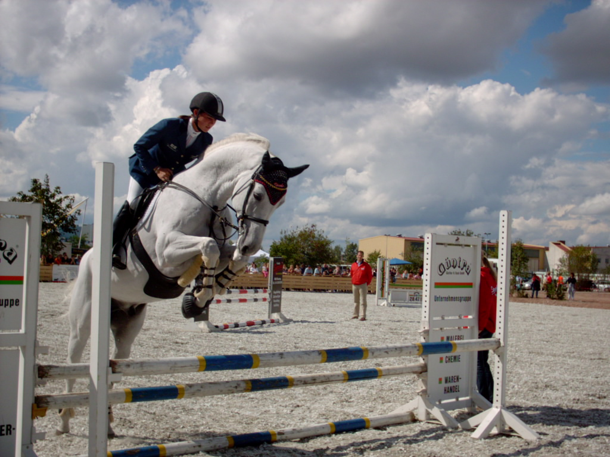

Parkurové skákání je jezdecký sport, ve kterém se jezdec na koni snaží buďto v co nejkratším čase a s co nejmenším počtem chyb projet trasu s překážkami nebo se trefit do časového limitu či hodnocení na styl. Za svůj vznik vděčí nejvíce důstojníkům britské kavalerie, kteří skoky přes různé překážky považovali za vynikající trénink jak jezdce tak i koně. Parkur má úzkou souvislost s drezurou, kůň musí být velice dobře přiježděn a musí důvěřovat jezdci. Na olympijských hrách se poprvé objevuje v roce 1900 v Paříži. Do roku 1945 byl parkur téměř výhradně vojenským sportem a některých závodů se směli účastnit pouze armádní jezdci. Od roku 1974 závodí muži společně se ženami.
| označení | popis | výška v cm |
|---|---|---|
| ZZ | malé | 80 |
| ZM | základní malé | 90 |
| Z | základní | 100 |
| ZL | základní lehké | 110 |
| L* | lehké | 115 |
| L** | lehké | 120 |
| S* | střední | 125 |
| S** | střední | 130 |
| ST* | středně těžké | 135 |
| ST** | středně těžké | 140 |
| T* | těžké | 145 |
| T** | velmi těžké | 150 |
| T*** | velmi těžké | 1555 |